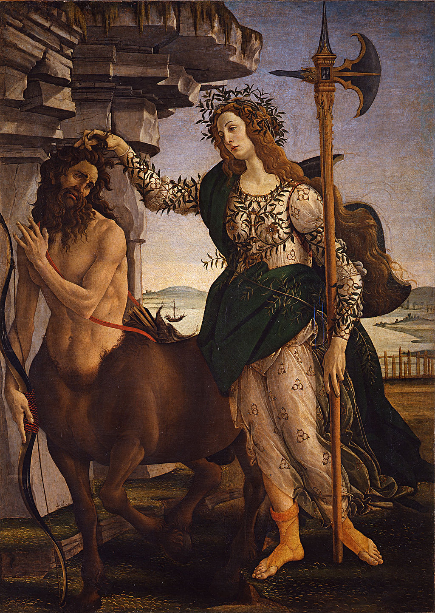

<head>
<meta charset="UTF-8" />
<meta name="keywords" content="drawing, painting" />
<meta name="description" content="drawings by Sunjy" />
<title>Sunjy</title>
<link rel="shortcut icon" type="image/x-icon" href="../../mImages/mCommon/favicon.ico" media="screen" />
<link rel="stylesheet" type="text/css" href="../../mCsses/mCommon/mCssA.css" />
<link rel="stylesheet" type="text/css" href="../../mCsses/mCommon/mCssB.css" />
<link rel="stylesheet" type="text/css" href="../../mCsses/mCommon/mCssC.css" />
<link rel="stylesheet" type="text/css" href="../../mCsses/mCommon/mCssD.css" />
<link rel="stylesheet" type="text/css" href="../../mCsses/mContent/mCssA.css" />
<link rel="stylesheet" type="text/css" href="../../mCsses/mContent/mCssB.css" />
<link rel="stylesheet" type="text/css" href="../../mCsses/mContent/mCssC.css" />
<link rel="stylesheet" type="text/css" href="../../mCsses/mContent/mCssD.css" />
</head>
<script type="text/javascript" src="../../mScripts/mContent/mContentAA.js" /></script>
<script type="text/javascript" src="../../mScripts/mContent/mContentAB.js" /></script>
<script type="text/javascript" src="../../mScripts/mContent/mContentAC.js" /></script>
<script type="text/javascript" src="../../mScripts/mContent/mContentAD.js" /></script>
<script type="text/javascript"></script> 
<script type="text/javascript">
document.write('<div class="mImgAbsolute"></div>');
/*
document.write('<p class="mFontSizeBColor" />From a white paper...</p>');
document.write('<table class="center"><tr><td>');
document.write('');
document.write('</td></tr></table>');
*/
</script>


<script type="text/javascript">
document.write('<p class="mFontSizeBColor" />Pallas and the Centaur</p>');
document.write('<p class="mFontSizeSColor" />“Pallas and the Centaur” by Sandro Botticelli depicts a centaur with bow and arrows and a female figure holding a very elaborate halberd. She is clutching the centaur’s hair, and he is submissive to her. The female character was called Camilla in the earliest record of the painting, but later she is called Minerva. Minerva was the Roman equivalent of Pallas Athene, and this description of “Pallas” for the woman has been adopted as her name.<br><br>The life-size figures are from classical mythology and form an allegory. Centaurs are associated with uncontrolled passion, lust, and sensuality, and part of the meaning of the painting is about the submission of passion to reason. An elaborate halberd was a weapon carried by guards rather than on the battlefield. The centaur appears to have been arrested while preparing to shoot his bow. Various other historical, political, and philosophical purposes have also been proposed for this image. <br><br>The beautiful cloth of Pallas’ clinging dress is decorated with the three-ring emblem of the Medici family. This detail confirms that the painting was made for the Medici family. Pallas wears laurel branches, entwined around her arms and chest, as well as for her crown. This motif is a punning allusion to Lorenzo de’ Medici. On her back is a shield, and she wears leather sandals on her feet.<br><br>Art historians believe that this Renaissance masterpiece was commissioned by Lorenzo de’ Medici for his cousin’s wedding. The two figures may represent the couple or their family’s histories. The bride’s family may be represented by Pallas as they overcome the greed surrounding them, as represented by the centaur when they showed courage in helping to reverse a challenging alliance that brought an end to a regional war. However, many other allegories have been proposed.<br><br>Pallas Athena<br><br>Athena was an ancient Greek goddess who was often given the epithet and described as Pallas. She is associated with wisdom and warfare and was later syncretized with the Roman goddess Minerva.<br><br>Athena’s epithet Pallas is derived either from the Greek word meaning “to brandish as a weapon,” or from Greek words, meaning “young woman.” After the original meaning of the name had been forgotten, the Greeks invented myths to explain its origins.<br><br>Camilla<br><br>Camilla was a figure from Roman mythology invented by Virgil for the Aeneid. She was a princess raised in the forest by her father, an exiled King, to be a virgin warrior huntress.  Virgil claimed that Camilla was so fast on her feet that she could run over a field of wheat without breaking the tops of the plants. Camilla was undoubtedly capable of subduing a centaur.<br><br>In Virgil’s Aeneid, Camilla’s father promised the goddess Diana that Camilla would be her servant, a warrior virgin. She was raised in her childhood to be a huntress and kept the companionship of the shepherds in the hills and woods.<br><br>Centaur<br><br>A centaur was a creature from Greek mythology with the upper body of a human and the lower body and legs of a horse. Centaurs are thought of in many Greek myths as being as wild as untamed horses.<br><br>Centaurs were subsequently featured in Roman mythology and were familiar figures in medieval tales with a moralizing tone. They remain a staple of today’s fantasy literature.<br><br>Allegory<br><br>An Allegory is an artistic device, where a character, place, or event is used to deliver a broader message applicable to the perceived real-world. Allegory is used to readily illustrate or convey complex ideas and concepts in ways that are comprehensible or striking to the viewer.<br><br>Artists have used allegories to convey semi-hidden or complex meanings through symbolic figures, imagery, or events, which create the moral, spiritual, or political meaning the artist wishes to express. Many allegories use personifications of abstract concepts.<br><br>Since meaningful stories are nearly always applicable to broader issues, allegories may be read into many paintings which the artist may not have recognized or intended.<br></p>');
document.write('<table class="center" /><tr><td>');
document.write('<br>The life-size figures are from classical mythology and form an allegory. Centaurs are associated with uncontrolled passion, lust, and sensuality, and part of the meaning of the painting is about the submission of passion to reason. An elaborate halberd was a weapon carried by guards rather than on the battlefield. The centaur appears to have been arrested while preparing to shoot his bow. Various other historical, political, and philosophical purposes have also been proposed for this image. <br><br>The beautiful cloth of Pallas’ clinging dress is decorated with the three-ring emblem of the Medici family. This detail confirms that the painting was made for the Medici family. Pallas wears laurel branches, entwined around her arms and chest, as well as for her crown. This motif is a punning allusion to Lorenzo de’ Medici. On her back is a shield, and she wears leather sandals on her feet.<br><br>Art historians believe that this Renaissance masterpiece was commissioned by Lorenzo de’ Medici for his cousin’s wedding. The two figures may represent the couple or their family’s histories. The bride’s family may be represented by Pallas as they overcome the greed surrounding them, as represented by the centaur when they showed courage in helping to reverse a challenging alliance that brought an end to a regional war. However, many other allegories have been proposed.<br><br>Pallas Athena<br><br>Athena was an ancient Greek goddess who was often given the epithet and described as Pallas. She is associated with wisdom and warfare and was later syncretized with the Roman goddess Minerva.<br><br>Athena’s epithet Pallas is derived either from the Greek word meaning “to brandish as a weapon,” or from Greek words, meaning “young woman.” After the original meaning of the name had been forgotten, the Greeks invented myths to explain its origins.<br><br>Camilla<br><br>Camilla was a figure from Roman mythology invented by Virgil for the Aeneid. She was a princess raised in the forest by her father, an exiled King, to be a virgin warrior huntress.  Virgil claimed that Camilla was so fast on her feet that she could run over a field of wheat without breaking the tops of the plants. Camilla was undoubtedly capable of subduing a centaur.<br><br>In Virgil’s Aeneid, Camilla’s father promised the goddess Diana that Camilla would be her servant, a warrior virgin. She was raised in her childhood to be a huntress and kept the companionship of the shepherds in the hills and woods.<br><br>Centaur<br><br>A centaur was a creature from Greek mythology with the upper body of a human and the lower body and legs of a horse. Centaurs are thought of in many Greek myths as being as wild as untamed horses.<br><br>Centaurs were subsequently featured in Roman mythology and were familiar figures in medieval tales with a moralizing tone. They remain a staple of today’s fantasy literature.<br><br>Allegory<br><br>An Allegory is an artistic device, where a character, place, or event is used to deliver a broader message applicable to the perceived real-world. Allegory is used to readily illustrate or convey complex ideas and concepts in ways that are comprehensible or striking to the viewer.<br><br>Artists have used allegories to convey semi-hidden or complex meanings through symbolic figures, imagery, or events, which create the moral, spiritual, or political meaning the artist wishes to express. Many allegories use personifications of abstract concepts.<br><br>Since meaningful stories are nearly always applicable to broader issues, allegories may be read into many paintings which the artist may not have recognized or intended.<br>" />');
document.write('</td></tr></table>');
</script>


